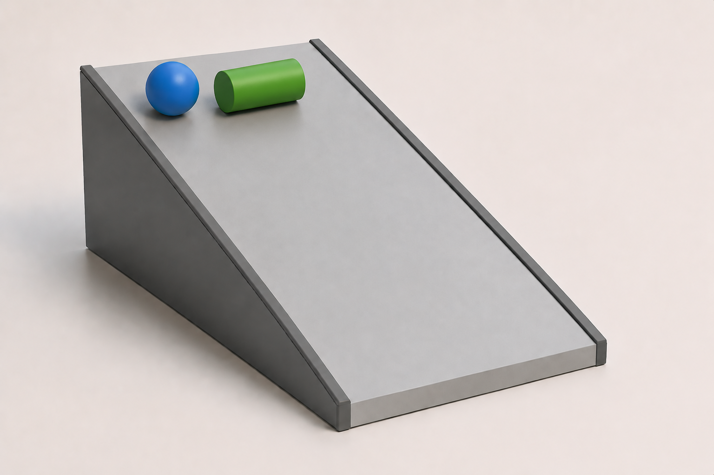
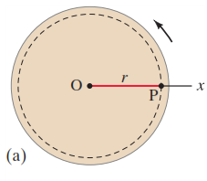
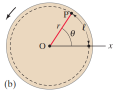
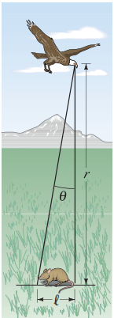
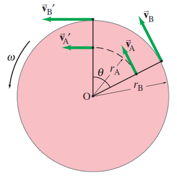
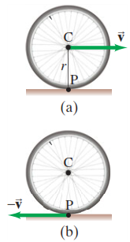
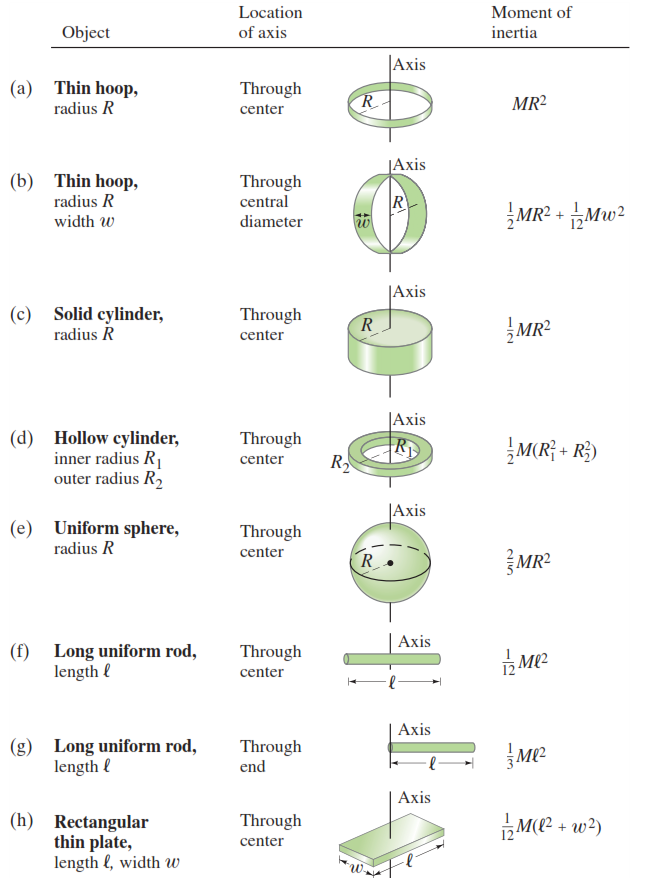
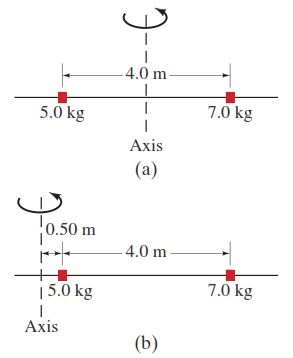
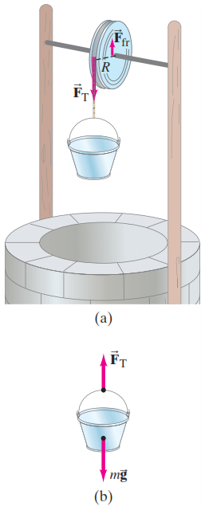

Gerak Rotasi
Memahami kinematika dan dinamika benda berputar, dari roda sepeda hingga tata surya.
Learning Outcomes
Setelah mempelajari bab ini, mahasiswa diharapkan mampu:
- Mendefinisikan besaran sudut (posisi, kecepatan, dan percepatan sudut)
- Menerapkan kinematika rotasi untuk percepatan sudut konstan
- Menjelaskan konsep torsi dan momen inersia (Hukum Newton II Rotasi)
- Menghitung energi kinetik rotasi dan menerapkannya pada benda menggelinding
- Menerapkan konsep momentum sudut dan hukum kekekalan momentum sudut

Tekan panah kanan atau swipe untuk melanjutkan
Dosen Pengampu
Ir. Fidelis Gigih Triatmaja, S.T., M.T.
Dosen Fisika Dasar — Politeknik ATMI Surakarta
Mana yang Lebih Dulu Sampai?
Chapter-Opening Question
Sebuah bola padat (solid ball) dan sebuah silinder padat (solid cylinder) melewati sebuah bidang miring. Keduanya mulai diam dari tempat dan waktu yang sama. Mana yang sampai di bawah lebih dulu?

Ilustrasi: Bola padat vs Silinder padat menggelindingMengapa? Kunci jawabannya ada pada momen inersia (kecenderungan benda untuk mempertahankan keadaan rotasinya).
Alasan Fisika:
Saat menggelinding, energi potensial gravitasi diubah menjadi energi kinetik translasi dan energi kinetik rotasi. Benda yang membutuhkan energi rotasi lebih sedikit akan memiliki energi translasi lebih besar (berarti lebih cepat).
Perbandingan Momen Inersia:
- Silinder padat: $I = \frac{1}{2}MR^2$ (lebih banyak massa terkonsentrasi jauh dari poros)
- Bola padat: $I = \frac{2}{5}MR^2$ (massa lebih terkonsentrasi di dekat poros)
Besaran Sudut (Angular Quantities)
Setiap titik pada benda yang berputar bergerak dalam lingkaran. Posisi sudut benda ditentukan oleh sudut $\theta$ terhadap garis referensi (sumbu-x). Satuan yang paling mudah untuk perhitungan fisika adalah radian (rad).
Di mana:
- $l$ = Panjang busur (arc length)
- $r$ = Jari-jari lingkaran
- $\theta$ = Sudut dalam radian
Konversi Satuan Sudut
Satu putaran penuh = Keliling lingkaran / jari-jari:

Titik P bergerak sepanjang busur $l$ saat roda berputar sejauh $\theta$.

Jika panjang busur $l$ sama dengan jari-jari $r$, maka sudut yang terbentuk adalah 1 radian.
Persamaan $l = r\theta$ hanya berlaku jika $\theta$ dalam satuan radian. Mengapa?
Karena radian adalah rasio antara dua panjang (busur dan jari-jari), maka radian adalah besaran tanpa dimensi (dimensionless). Jika Anda memasukkan derajat ke dalam rumus $l = r\theta$, hasilnya akan salah total secara fisika!
Latihan Soal: Penglihatan Elang
Mata elang mampu membedakan objek yang memiliki sudut pandang tidak kurang dari sekitar $3 \times 10^{-4}$ rad. (a) Berapa derajatkah sudut yang sangat kecil ini? (b) Seberapa kecil objek (panjang chord/busur) yang bisa dibedakan elang saat terbang pada ketinggian 100 m?
Diketahui: $\theta = 3 \times 10^{-4}$ rad
Ditanya: $\theta$ dalam derajat?
Jawab:
Kita gunakan faktor konversi yang sudah kita pelajari, di mana $360^\circ = 2\pi$ rad:
Sudut ini sangat kecil, hampir tidak terdeteksi oleh mata manusia!
Diketahui: $\theta = 3 \times 10^{-4}$ rad, $r = 100$ m
Ditanya: Panjang objek ($l$)?
Jawab:
Karena sudutnya sangat kecil, panjang busur $l$ dan panjang tali busur (chord) hampir sama. Kita gunakan persamaan $l = r\theta$ (pastikan $\theta$ dalam radian!):

Ilustrasi sudut pandang elang terhadap objek di tanahKecepatan & Percepatan Sudut
Kecepatan Sudut ($\omega$)
Laju perubahan posisi sudut terhadap waktu. Semua titik pada benda tegar yang berputar memiliki kecepatan sudut yang sama.
+ (positif) = Berlawanan jarum jam (CCW)
- (negatif) = Searah jarum jam (CW)
Percepatan Sudut ($\alpha$)
Laju perubahan kecepatan sudut terhadap waktu. Menunjukkan seberapa cepat benda semakin cepat atau lambat berputar.
Frekuensi dan Perioda
Frekuensi ($f$) adalah jumlah putaran per sekon, dan Perioda ($T$) adalah waktu yang dibutuhkan untuk satu putaran penuh.
Satuan frekuensi: Hertz (Hz) atau s-1
Sebuah roda berputar dengan frekuensi $f = 2 \text{ Hz}$ (2 putaran per sekon).
Maka kecepatan sudutnya:
Poin Penting: Rotasi vs Translasi
Dalam gerak translasi, setiap titik pada benda tegar memiliki kecepatan linier $v$ yang sama. Namun dalam gerak rotasi, setiap titik pada benda tegar memiliki kecepatan sudut $\omega$ yang sama, tetapi kecepatan linier $v$-nya berbeda-beda tergantung jaraknya dari poros!
Latihan Soal: Hard Disk Drive (HDD)
Piringan komputer (hard disk) berputar dengan kecepatan 7200 rpm (revolutions per minute). (a) Berapakah frekuensi putarannya dalam Hz? (b) Berapakah kecepatan sudutnya dalam rad/s? (c) Berapakah perioda untuk satu putaran penuh?
Diketahui: Kecepatan = 7200 rpm (putaran per menit)
Ditanya: Frekuensi $f$ dalam Hz (putaran per sekon)?
Jawab:
Kita perlu mengkonversi satuan waktu dari menit ke sekon. Ingat bahwa 1 menit = 60 sekon.
Diketahui: $f = 120$ Hz
Ditanya: $\omega$?
Jawab:
Gunakan hubungan antara kecepatan sudut dan frekuensi:
Diketahui: $f = 120$ Hz
Ditanya: $T$?
Jawab:
Perioda adalah kebalikan dari frekuensi:
Hubungan Besaran Linier & Sudut
Setiap titik pada benda berputar memiliki kecepatan linier $v$ dan percepatan linier $a$. Bagaimana hubungannya dengan besaran sudut?
Semakin jauh dari poros, kecepatan linier semakin besar.
Percepatan searah lintasan (mengubah besarnya kecepatan).
Percepatan mengarah ke poros (mengubah arah kecepatan).

Titik B lebih jauh dari poros ($r_B > r_A$), sehingga $v_B > v_A$, namun $\omega_A = \omega_B$.
Pada carousel, anak di kuda tepat di tepi luar dan anak di singa berada di tengah. Siapa yang memiliki $v$ lebih besar? Siapa yang $\omega$-nya lebih besar?
- Kecepatan Linier ($v$): Anak di kuda (tepiluar) lebih besar, karena jari-jarinya lebih besar ($v = r\omega$).
- Kecepatan Sudut ($\omega$): Sama! Carousel berputar sebagai satu kesatuan benda tegar. Semua titik menempati sudut yang sama dalam waktu yang sama.
Simulasi Roda Berputar
Panjang vektor pada simulasi sebanding dengan nilai perhitungan.
Latihan Soal: Bianglala (Carousel)
Sebuah bianglala (carousel) awalnya diam, lalu dipercepat secara konstan dengan percepatan sudut $\alpha = 0.060 \text{ rad/s}^2$. Setelah berlangsung selama $t = 8.0$ s, tentukan: (a) Kecepatan sudut bianglala, (b) Kecepatan linier seorang anak yang duduk pada jarak $r = 2.5$ m dari pusat, (c) Percepatan sentripetal yang dialami anak tersebut.
Diketahui: $\omega_0 = 0$ (diam), $\alpha = 0.060 \text{ rad/s}^2$, $t = 8.0$ s
Ditanya: $\omega$?
Jawab:
Gunakan definisi percepatan sudut rata-rata, atau persamaan kinematika rotasi:
Diketahui: $\omega = 0.48 \text{ rad/s}$, $r = 2.5$ m
Ditanya: $v$?
Jawab:
Gunakan hubungan kecepatan linier dan kecepatan sudut:
Catatan: Satuan "rad" dihilangkan pada hasil akhir karena radian adalah besaran tanpa dimensi (rasio dua jarak).
Diketahui: $\omega = 0.48 \text{ rad/s}$, $r = 2.5$ m
Ditanya: $a_R$?
Jawab:
Gunakan rumus percepatan sentripetal dalam variabel sudut:
Percepatan Sudut Konstan
Sama seperti gerak linier, jika percepatan sudut $\alpha$ konstan, kita dapat menggunakan persamaan kinematika rotasi. Perhatikan analogi yang sangat kuat antara keduanya:
| Gerak Linier ($a$ konstan) | Gerak Rotasi ($\alpha$ konstan) |
|---|---|
| $v = v_0 + at$ | $ \omega = \omega_0 + \alpha t $ |
| $x = v_0 t + \frac{1}{2}at^2$ | $ \theta = \omega_0 t + \frac{1}{2}\alpha t^2 $ |
| $v^2 = v_0^2 + 2ax$ | $ \omega^2 = \omega_0^2 + 2\alpha\theta $ |
| $ \bar{v} = \frac{v + v_0}{2} $ | $ \bar{\omega} = \frac{\omega + \omega_0}{2} $ |
Syarat: $x_0 = 0$ dan $\theta_0 = 0$ pada $t_0 = 0$
Latihan Soal: Sentrifuger Laboratorium
Rotor sebuah sentrifuger dipercepat dari diam hingga mencapai 20.000 rpm dalam waktu 30 detik. (a) Berapakah percepatan sudut rata-ratanya? (b) Berapa putaran (revolusi) yang telah dilakukan rotor selama periode percepatan ini? (Asumsikan $\alpha$ konstan)
Diketahui: $\omega_0 = 0$, $\omega = 20.000 \text{ rpm}$, $\Delta t = 30 \text{ s}$
Ditanya: $\alpha$?
Jawab:
Langkah 1: Konversi $\omega$ ke rad/s agar seragam dalam satuan SI.
Langkah 2: Gunakan persamaan kinematika rotasi.
Ditanya: Jumlah revolusi?
Jawab:
Kita cari sudut putar total dalam radian terlebih dahulu menggunakan persamaan $\theta = \omega_0 t + \frac{1}{2}\alpha t^2$:
Kemudian konversi radian ke revolusi (1 rev = $2\pi$ rad):
Gerak Menggelinding (Tanpa Selip)
Gerak menggelinding adalah kombinasi antara translasi (berpindah) dan rotasi (berputar). Jika tidak ada selipan, titik kontak benda dengan tanah sesaat diam.
Syarat Tanpa Selip (No Slipping)
Jarak linier yang ditempuh pusat massa sama dengan panjang busur yang dilalui titik pada rim roda:
Di mana $d$ adalah jarak tempuh linier, dan $v$ adalah kecepatan linier pusat massa.
Analisis Dua Frame Referensi
- Frame Tanah: Pusat roda bergerak ke kanan dengan kecepatan $v$, titik kontak P sesaat diam.
- Frame Roda (Aksel): Kita bergerak bersama pusat roda. Tanah bergerak ke kiri dengan $-v$, dan roda hanya melakukan rotasi murni ($v_{rim} = r\omega$).

Ilustrasi roda menggelinding dari dua frame referensiLatihan Soal: Sepeda yang Melambat
Sebuah sepeda melambat secara seragam dari $v_0 = 8.40 \text{ m/s}$ hingga diam pada jarak $d = 115 \text{ m}$. Diameter ban sepeda adalah $68.0 \text{ cm}$. Tentukan: (a) Kecepatan sudut awal ban ($\omega_0$), (b) Jumlah putaran total yang dilakukan ban sebelum berhenti, (c) Percepatan sudut ban ($\alpha$).
Diketahui: $v_0 = 8.40 \text{ m/s}$, $r = \frac{68.0}{2} = 34.0 \text{ cm} = 0.34 \text{ m}$
Ditanya: $\omega_0$?
Jawab:
Gunakan hubungan gerak menggelinding $v = r\omega$:
Diketahui: $d = 115 \text{ m}$, $r = 0.34 \text{ m}$
Ditanya: Jumlah revolusi?
Jawab:
Setiap satu putaran penuh, sepeda melaju sejauh keliling ban ($2\pi r$). Maka jumlah putaran adalah jarak total dibagi keliling:
Secara sudut, hal ini setara dengan $\theta = 53.8 \times 2\pi \approx 338 \text{ rad}$.
Diketahui: $\omega_0 = 24.7 \text{ rad/s}$, $\omega = 0$, $\theta = 338 \text{ rad}$
Ditanya: $\alpha$?
Jawab:
Gunakan persamaan kinematika rotasi yang tidak memuat waktu $t$:
Torsi (Torque)
Gaya menyebabkan benda bergerak translasi, tetapi apa yang menyebabkan benda berputar? Jawabannya adalah Torsi ($\tau$). Torsi bergantung pada 3 faktor: besar gaya, titik kerja gaya, dan arah gaya.
Di mana:
- $r_\perp$ = Lengan momen (lever arm), jarak tegak lurus dari poros ke garis kerja gaya.
- $r$ = Jarak dari poros ke titik gaya dikerjakan.
- $\theta$ = Sudut antara vektor $\vec{F}$ dan vektor $\vec{r}$.
Satuan Torsi:
Newton-meter (N·m). Bukan Joule! Meskipun dimensinya sama, torsi bukan energi.
Simulasi: Mendorong Pintu
Torsi Maksimum
Gaya tegak lurus terhadap pintu. Lengan momen $r_\perp = r$. Paling mudah membuka pintu.
Torsi Parsial
Hanya komponen $F \sin\theta$ yang efektif memutar pintu. Lengan momen memendek.
Torsi Nol
Gaya sejajar dengan pintu (mendorong engsel). Tidak ada rotasi yang terjadi.
Karena $\tau = r_\perp F$. Untuk menghasilkan torsi $\tau$ yang sama (misalnya untuk mengendorkan baut yang sangat kencang), jika Anda menambah jarak $r$ (menggunakan gagang yang lebih panjang), maka gaya $F$ yang Anda butuhkan akan menjadi lebih kecil. Ini adalah prinsip tuas/lever yang sangat menguntungkan secara mekanis!
Hukum Newton II untuk Rotasi
Jika Hukum Newton II untuk translasi adalah $\Sigma F = ma$, apa padanannya untuk rotasi? Torsi ($\tau$) berperan sebagai gaya, dan momen inersia ($I$) berperan sebagai massa.
Hukum Newton II Rotasi
Analogi Translasi vs Rotasi
| Translasi | Rotasi |
| Gaya ($F$) | Torsi ($\tau$) |
| Massa ($m$) | Momen Inersia ($I$) |
| Percepatan ($a$) | Percepatan Sudut ($\alpha$) |
Derivasi Matematis
Mari kita turunkan hukum ini dari partikel tunggal yang berputar pada ujung tali sepanjang $r$.
Gaya $F$ bekerja tangensial pada partikel bermassa $m$, menghasilkan percepatan linier $a$:
Kita tahu bahwa percepatan tangensial berhubungan dengan percepatan sudut: $a_{\text{tan}} = r\alpha$. Substitusikan ke persamaan gaya:
Torsi adalah gaya dikali lengan momen ($\tau = rF$). Kalikan kedua ruas dengan $r$:
Untuk benda tegar yang terdiri dari banyak partikel, kita jumlahkan: $\Sigma \tau = (\Sigma mr^2)\alpha = I\alpha$.
Momen Inersia ($I$)
Momen inersia adalah ukuran keengganan benda untuk berubah keadaan rotasinya (analogi dari massa pada translasi). Nilainya bergantung pada distribusi massa terhadap poros rotasi.
Mari kita ingat kembali Hukum Newton II untuk Rotasi: $\Sigma\tau = I\alpha$. Kita akan melihat dari mana bagian $mr^2$ berasal.
Langkah 1: Satu Partikel yang Berputar
Bayangkan satu partikel bermassa $m$ di ujung tali sepanjang $r$. Gaya $F$ dikerjakan tangensial sehingga menimbulkan torsi $\tau = rF$.
Langkah 2: Substitusi Hukum Newton II Translasi
Gaya $F$ pada partikel menimbulkan percepatan tangensial $a_{\text{tan}}$, sehingga $F = ma_{\text{tan}}$.
Langkah 3: Hubungkan dengan Percepatan Sudut
Kita tahu $a_{\text{tan}} = r\alpha$. Substitusikan ke persamaan torsi:
Langkah 4: Bandingkan dengan $\tau = I\alpha$
Dari persamaan $\tau = (mr^2)\alpha$ dan membandingkannya dengan $\tau = I\alpha$, kita dapatkan:
Karena benda tegar terdiri dari banyak partikel, kita jumlahkan kontribusi setiap partikel: $I = m_1r_1^2 + m_2r_2^2 + \dots = \Sigma m_i r_i^2$.

Tabel Momen Inersia untuk berbagai benda tegar seragam (Giancoli, Fig. 8-20)Latihan Soal: Dua Beban pada Batang
Dua beban kecil bermassa $m_1 = 5.0 \text{ kg}$ dan $m_2 = 7.0 \text{ kg}$ dipasang pada batang ringan sejauh $4.0 \text{ m}$. Hitunglah momen inersia sistem jika diputar pada: (a) Poros di tengah antara kedua beban, (b) Poros $0.50 \text{ m}$ di sebelah kiri beban $m_1$.
Diketahui: $r_1 = 2.0 \text{ m}$, $r_2 = 2.0 \text{ m}$ (lihat gambar (a))
Diketahui: $r_1 = 0.50 \text{ m}$, $r_2 = 4.50 \text{ m}$ (lihat gambar (b))

Ilustrasi perpindahan poros rotasi (Giancoli, Fig. 8-19)Katrol dan Ember (Atwood Machine)
Deskripsi Soal
Sebuah katrol bermassa $M = 4.00 \text{ kg}$ dan jari-jari $R = 33.0 \text{ cm}$ digantungi tali yang ujungnya diikat pada ember bermassa $m = 1.53 \text{ kg}$. Katrol memiliki torsi gesekan $\tau_{fr} = 1.10 \text{ N}\cdot\text{m}$. Hitunglah: (a) Percepatan sudut katrol ($\alpha$), (b) Percepatan linier ember ($a$).
Ini adalah contoh klasik di mana kita harus menggabungkan Hukum Newton II untuk Translasi (ember) dan Rotasi (katrol).
Fokus pada katrol. Ada dua torsi yang bekerja:
- Torsi oleh Tali ($\tau_{tali}$): Gaya tegangan tali $F_T$ menarik rim katrol ke bawah. Lengan momennya adalah $R$. Karena searah putaran (CCW), torsi ini positif: $\tau_{tali} = +F_T \cdot R$
- Torsi Gesekan ($\tau_{fr}$): Melawan putaran. Karena berlawanan arah, torsi ini negatif: $\tau_{gesek} = -\tau_{fr}$
Momen inersia katrol (silinder padat) adalah $I = \frac{1}{2}MR^2$. Maka Hukum Newton II Rotasi $\Sigma\tau = I\alpha$ ditulis:
Di sini kita punya 2 variabel yang belum diketahui: $F_T$ dan $\alpha$. Kita butuh persamaan lain!
Fokus pada ember. Ada dua gaya vertikal:
- Berat ($w = mg$): Mengarah ke bawah.
- Tegangan Tali ($F_T$): Menarik ke atas.
Ambil arah bawah (arah gerak ember) sebagai positif. Maka Hukum Newton II Translasi $\Sigma F = ma$ ditulis:
Kesalahan Umum: Jangan menganggap $F_T = mg$! Jika $F_T = mg$, maka $\Sigma F = 0$, sehingga $a = 0$ (ember tidak dipercepat). Karena ember jatuh dipercepat, pasti $mg > F_T$.
Bagaimana menghubungkan gerak linier ember dengan gerak rotasi katrol? Kuncinya: tali tidak selip.
Kecepatan linier ember ($v$) harus sama dengan kecepatan tepi katrol ($v_{rim}$). Begitu juga percepatannya:
Kita akan memakai hubungan $\alpha = \frac{a}{R}$ nanti untuk menyatukan dua persamaan Newton di atas.

Diagram benda bebas katrol dan ember (Fig. 8-22)- $M = 4.00 \text{ kg}$
- $R = 0.330 \text{ m}$
- $I = \frac{1}{2}MR^2 = 0.218 \text{ kg}\cdot\text{m}^2$
- $m = 1.53 \text{ kg}$ ($mg \approx 15.0 \text{ N}$)
- $\tau_{fr} = 1.10 \text{ N}\cdot\text{m}$
Penyelesaian Akhir: Eliminasi & Substitusi
Tujuan: Kita ingin menghilangkan $F_T$ sehingga kita mendapat persamaan yang hanya berisi $\alpha$ (atau $a$).
Langkah 4a: Uraikan $F_T$ dari persamaan Ember (Langkah 2)
Karena kita ingin mencari $\alpha$, ganti $a$ menjadi $R\alpha$ (dari Langkah 3):
Langkah 4b: Masukkan $F_T$ ini ke persamaan Katrol (Langkah 1)
Langkah 4c: Jabarkan dan pindahkan ruas
Kalikan $R$ ke dalam kurung:
Pindahkan suku yang mengandung $\alpha$ ke ruas kanan, dan suku konstan ke ruas kiri:
Keluarkan faktor $\alpha$:
Insight Fisika: Penyebutnya $(I + mR^2)$ adalah "Inersia Total Sistem". Inersia katrol ($I$) ditambah kontribusi inersia ember yang sedang bertranslasi ($mR^2$).
Dari hasil akhir Langkah 4c, kita isolasi $\alpha$ agar berada di satu ruas:
Dari persamaan di atas, mari kita identifikasi bagian-bagiannya agar mudah menghitungnya:
- Pembilang = $mgR - \tau_{fr}$ → Ini adalah Torsi Neto penyebab gerak (Torsi berat ember dikurangi torsi gesekan penghambat).
- Penyebut = $I + mR^2$ → Ini adalah Inersia Total penghambat gerak (Inersia rotasi katrol + Inersia translasi ember).
Langkah 5a: Hitung Pembilang (Torsi Neto Sistem)
Langkah 5b: Hitung Penyebut (Inersia Total Sistem)
Langkah 5c: Hitung Percepatan Sudut ($\alpha$)
Langkah 5d: Hitung Percepatan Linier Ember ($a$)
Energi Kinetik Rotasi
Benda yang berputar memiliki energi kinetik, persis seperti benda yang bergerak translasi. Rumusnya sangat analog dengan $KE_{trans} = \frac{1}{2}mv^2$.
Energi Kinetik Rotasi
Di mana $I$ adalah momen inersia dan $\omega$ adalah kecepatan sudut.
Energi Kinetik Total (Benda Menggelinding)
Benda yang menggelinding tanpa selip memiliki energi kinetik total yang merupakan jumlah dari energi translasi PUSAT MASSA dan energi rotasi terhadap pusat massa:
Analogi Energi Translasi vs Rotasi
| Translasi | Rotasi |
| Massa ($m$) | Momen Inersia ($I$) |
| Kecepatan ($v$) | Kecepatan Sudut ($\omega$) |
| $KE = \frac{1}{2}mv^2$ | $KE = \frac{1}{2}I\omega^2$ |
Karena benda tersebut melakukan dua gerakan sekaligus:
- Bergerak lurus ke depan (translasi) $\implies$ butuh energi $\frac{1}{2}mv^2$
- Berputar di tempat (rotasi) $\implies$ butuh energi $\frac{1}{2}I\omega^2$
Energi totalnya adalah jumlah keduanya. Ini adalah manifestasi langsung dari Teorema Usaha-Energi!
Pembuktian Soal Pembuka: Mana yang Lebih Cepat?
Di slide pembuka, kita menyimpulkan bola padat sampai lebih dulu. Mari kita buktikan secara matematis menggunakan konsep Energi! Misalkan sebuah bola padat dan silinder padat menggelinding dari bidang miring setinggi $h$ tanpa selip.
Energi potensial gravitasi di atas diubah seluruhnya menjadi energi kinetik total di bawah (asumsikan tidak ada gesekan udara).
Substitusikan $\omega = v/r$ untuk menggelinding tanpa selip:
Keluarkan faktor $v^2$ dan sederhanakan:
Kuncinya: Semakin besar nilai $\frac{I}{mr^2}$, semakin kecil kecepatan $v$-nya! Massa dan jari-jari tidak berpengaruh pada urutan, yang berpengaruh adalah bentuk bendanya (menentukan $I$).
Dari persamaan umum, penyebutnya adalah $\left(1 + \frac{I}{mr^2}\right)$. Mari kita substitusikan rumus $I$ untuk masing-masing benda (lihat tabel Slide 10):
Kasus Silinder Padat:
Momen inersia $I = \frac{1}{2}mr^2$. Substitusikan ke pecahan $\frac{I}{mr^2}$ (perhatikan bahwa $m$ dan $r^2$ dicoret karena sama):
Maka penyebut totalnya: $1 + 0.5 = \mathbf{1.5}$
Kasus Bola Padat:
Momen inersia $I = \frac{2}{5}mr^2$. Substitusikan ke pecahan $\frac{I}{mr^2}$:
Maka penyebut totalnya: $1 + 0.4 = \mathbf{1.4}$
Sekarang kita masukkan angka penyebut ini kembali ke persamaan kecepatan $v = \sqrt{\frac{2gh}{\text{penyebut}}}$:
Momentum Sudut & Kekekalan
Analogi terakhir dari gerak translasi! Jika benda bergerak linier memiliki momentum $p = mv$, maka benda berputar memiliki Momentum Sudut $L$.
Definisi Momentum Sudut
Satuan: $\text{kg}\cdot\text{m}^2/\text{s}$
Hukum Kekekalan Momentum Sudut
Jika tidak ada torsi luar neto yang bekerja pada sistem ($\Sigma\tau = 0$), maka momentum sudut total sistem tersebut kekal (konstan).
Ilustrasi: Skater Berputar
Untuk mempertahankan $L$ tetap sama, jika $I$ mengecil, maka $\omega$ harus membesar. Skater berputar lebih cepat!
- Atlet Seluncur Indah: Menarik tangan ke dalam agar berputar sangat cepat.
- Pelompat Tali/Voli: Melipat tubuh saat di udara untuk mempercepat rotasi gulungan.
- Bintang Neutron: Inti bintang yang runtuh. Jari-jarinya mengecil drastis, sehingga $\omega$-nya melonjak hingga ratusan putaran per detik!
Latihan Soal: Skater Melipat Tangan
Seorang skater berputar dengan kecepatan sudut $\omega_i = 2.0 \text{ rad/s}$ dengan lengan terbuka, sehingga momen inersianya $I_i = 3.0 \text{ kg}\cdot\text{m}^2$. Saat ia menarik lengannya ke dalam, momen inersianya berkurang menjadi $I_f = 0.8 \text{ kg}\cdot\text{m}^2$. Berapakah kecepatan sudut akhirnya ($\omega_f$)?
Asumsi: Tidak ada torsi luar (gesekan es diabaikan), maka $L_i = L_f$.
Isolasi $\omega_f$ dan masukkan angkanya:
Peta Konsep: Gerak Rotasi
Poin Penting yang Harus Diingat:
Terima Kasih!
Kehidupan bukanlah lintasan lurus. Kadang kita harus menghadapi torsi, mengalahkan inersia, dan tetap menjaga momentum sudut kita agar terus berputar maju!
Politeknik ATMI Surakarta — Teknik Mesin Industri